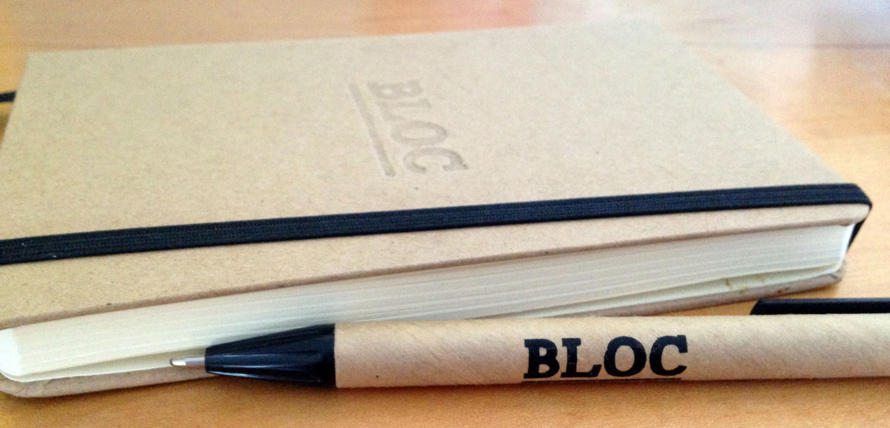

My name is Tyler Schmidt and I am a maker.
From models, board games, to comics, I always loved building or creating things of my own. Lego quite literally was one of the building blocks for leading me to where I am now.
When I started college at the University of Illinois at Urbana Champaign, I really started to grow as a designer. When I got on campus, I took full advantage of my first year as an arts foundation student and took every class I could.
After a year of foundations, I decided to persue my BFA in graphic design. I connected to the mix of creativity and pragmatism that is really intrinsic to the field. That dichotomy has also been a large influence on my work. Diving straight into design, we explored many different projects that grew our skills. Designing typefaces, illustrating and screen printing gig posters, making video games - If you thought of a project, you could find a way to do it.
It was also my time at U of I that first sparked my love of working in diverse teams. At a large university the opportunities to collaborate with people of varying disciplines is endless. I worked with writers and editors for a magazine, actors for a video series, and astronomers for a class website.These were all great experiences that helped me grow as a designer.
I strongly believe that growth is necessary in all that you do, and I took this to heart after graduating. I hate the feeling of being stagnant, especially as a designer. Learning new skills through tackling new projects is thrilling to me as a creative. Growing your abilities is not only necessary, but thrilling to me as a creative.
Assisting with merchandise and packaging for breweries, creating a branding system for a chicago skyscraper, producing illustrations that fill office walls, all these projects pushed me further and further as a designer and as a person.
Our world is constantly changing and updating. Not only the technology we use every day, but how we interact with it. And while I loved the world of print design, I knew I wanted to have a an impact on the new and exciting ways people interact with their media.
This path led me to Bloc.io where I was paired with a professional mentor who pushed me through visually interesting projects and while explaining the theory behind the process.
This process allowed me to work on projects from the point of problem identity to solution deployment while covering every step in between. All these things and more became incredibly important factors to my process and influenced not just design work but everything I do.